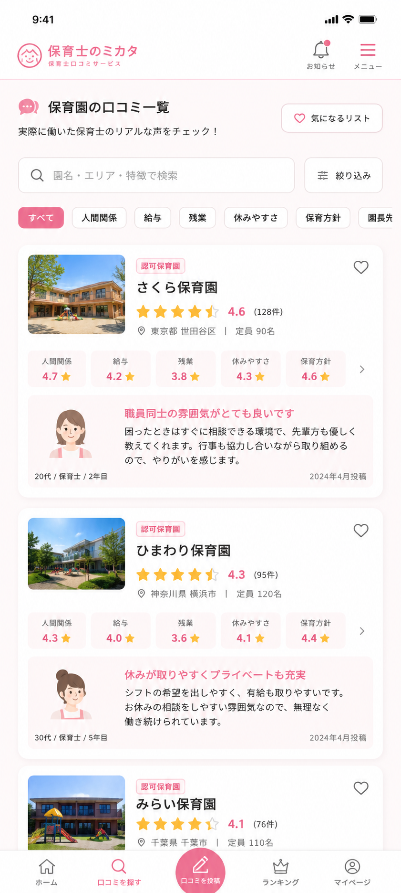
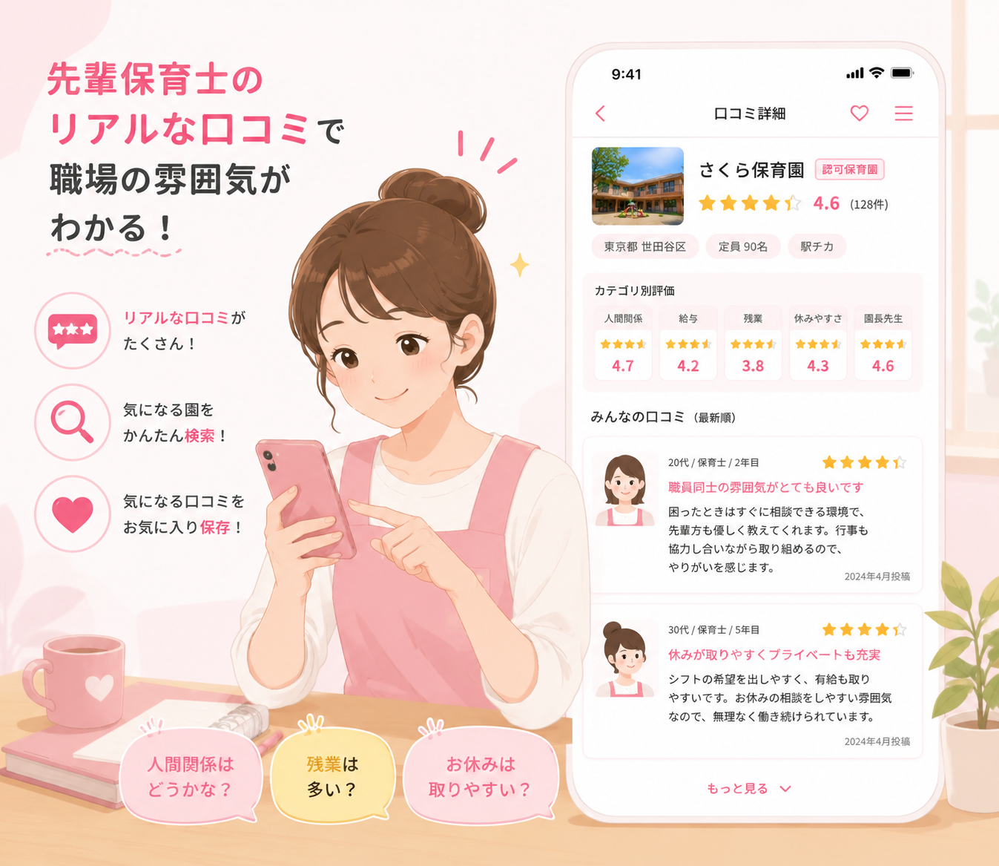
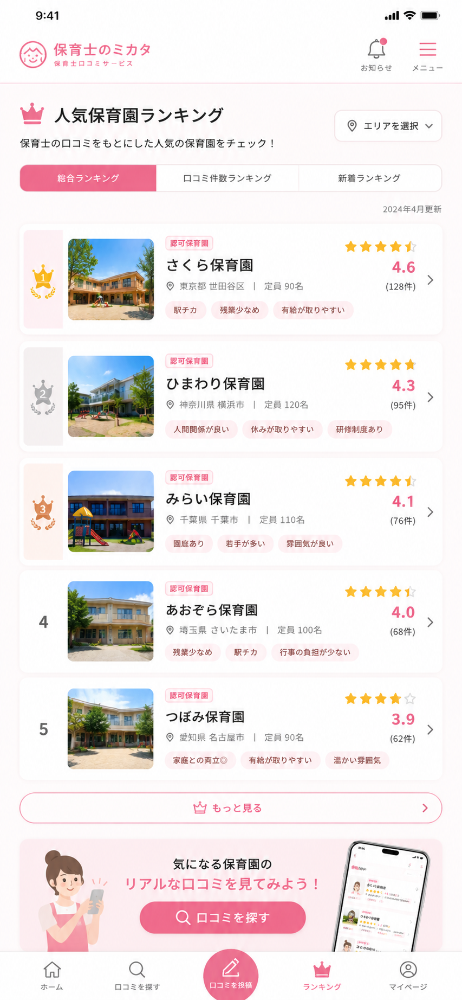

求人票だけでは見えない
保育園のリアルがわかる。
保育士口コミ100万件以上をもとに、気になる園の雰囲気・
働きやすさ・ランキングを無料でチェック。

保育士のミカタとは
実際に働いた保育士の口コミから、求人票だけでは分からない保育園のリアルを確認できる口コミサービスです。
- 人間関係や園長先生の雰囲気がわかる
- 残業・給与・休みやすさなどを確認できる
- ランキングや比較機能で園選びをサポート
求人票だけではわからない
保育園のリアルが見える
人間関係
職員同士の雰囲気や相談しやすさを確認。
残業
残業や持ち帰り仕事の実態をチェック。
給与
給与・昇給・待遇に関する口コミを確認。
園長先生
園長先生の雰囲気や方針が見えてくる。
休みやすさ
有給やシフトの相談しやすさを確認。
保育方針
園の方針や教育観の相性がわかります。
実際の口コミを
見てみよう
職員同士の雰囲気が良く、相談しやすい環境でした。
行事前は忙しいですが、普段は残業が少なめです。
シフト希望を出しやすく、有給も取りやすい雰囲気です。

人気の保育園を
ランキングで比較
口コミ評価をもとに、気になる園をランキング形式でチェックできます。エリアや特徴から、自分に合う園探しをサポートします。
評価 4.6 / 口コミ128件
評価 4.4 / 口コミ96件
評価 4.3 / 口コミ78件
ランキングを見る


気になる園を
かんたん比較
人間関係・給与・残業・休みやすさなど、気になるポイントを並べて比較できます。
- 複数の園を一覧で比較できる
- 項目別の評価が見やすい
- 迷ったときの判断材料になる
保育士のミカタで
できること
園を検索
エリアや条件から、自分に合う保育園を探せます。
口コミ閲覧
実際に働いた保育士のリアルな声を確認。
ランキング
人気の保育園をランキングで比較できます。
園を比較
複数園の評価や特徴を見比べられます。
かんたん4STEPで
使えます
無料登録
スマホからかんたん登録。
口コミを見る
気になる園のリアルを確認。
園を比較
評価や特徴を見比べる。
応募する
納得して次の一歩へ。
保育士のミカタが
選ばれる理由
口コミ数が豊富
多くの口コミから園の雰囲気を確認できます。
リアルな声
求人票だけでは見えない働く人の声が見られます。
ランキング
人気の保育園を比較しながら探せます。
無料で使える
気になる園の情報を気軽に確認できます。
よくある質問
Q. 本当に無料ですか？
A. はい、すべての機能を無料でご利用いただけます。
Q. スマホでも利用できますか？
A. はい。スマートフォンに最適化されていますので、通勤中などでも快適にご利用いただけます。
Q. どんな口コミが見られますか？
A. 人間関係、残業、給与、園長先生の雰囲気、休みやすさ、保育方針など、働く上で気になる項目の口コミを確認できます。
Q. ランキングは見られますか？
A. 口コミ評価をもとにしたランキングで、気になる保育園を比較できます。
Q. 登録後すぐに使えますか？
A. はい。登録後すぐに口コミやランキングをご確認いただけます。